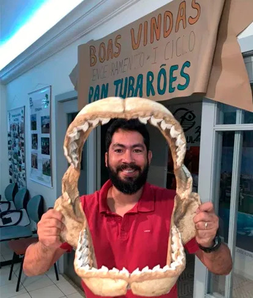

Laboratório de Organismos Aquáticos
LabAqua, coordenado pelo Prof. Dr. Jorge L. S. Nunes (UFMA), dedicado à formação de pesquisadores e à conservação de espécies e habitats do litoral maranhense.
Pesquisas científicas e formação de recursos humanos
Produzir, integrar e disseminar conhecimento científico sobre organismos e ecossistemas aquáticos, com ênfase na biodiversidade, ecologia, biologia, sistemática, evolução e conservação de peixes e outros organismos marinhos e costeiros, contribuindo para a formação de pesquisadores, a compreensão dos ambientes aquáticos e o desenvolvimento de estratégias para sua conservação e uso sustentável, especialmente no Maranhão e no litoral amazônico.
Conhecer para conservar
Educação e divulgação científica sobre a biodiversidade e conservação do litoral amazônico, utilizando o acervo do LabAqua como ferramenta de conhecimento para aproximação entre ciência e sociedade. O que fazemos: nossos estudos buscam conhecer aspectos gerais da biodiversidade amazônica por meio dos seus processos evolutivos e ecológicos, com ênfase em organismos aquáticos presentes em vários tipos de habitats marinhos e estuarinos.
Desvendar o desconhecido
O LabAqua desenvolve pesquisas sobre a biodiversidade e a dinâmica dos organismos e ecossistemas aquáticos, com ênfase nos ambientes marinhos, costeiros e estuarinos do Maranhão e do litoral amazônico.
Bolsista de Produtividade em Pesquisa do CNPq - Nível C. Área de atuação correspondente à ecologia marinha, biologia marinha e ictiologia. Consultor Científico do Projeto Orla Viva. Editor do Boletim do Laboratório de Hidrobiologia. Líder do Grupo de Estudos de Elasmobrânquios do Maranhão. Líder do Grupo de Estudos de Elasmobrânquios Amazônicos.
Jorge Nunes
Professor Titular · UFMA
Graduado em Ciências Biológicas pela Universidade Federal do Maranhão (2000), mestrado em Oceanografia pela Universidade Federal de Pernambuco (2003) e doutorado em Oceanografia pela Universidade Federal de Pernambuco (2008).
Atualmente é professor titular da Universidade Federal do Maranhão. Atua no curso de graduação em Oceanografia de São Luís e no Programa de Pós-Graduação em Biodiversidade e Conservação. Faz parte do quadro de professores permanentes da Rede de Biodiversidade e Biotecnologia da Amazônia Legal, e é atualmente vice-coordenador do Programa de Pós-Graduação em Biodiversidade e Conservação.

Graduado em Ciências Biológicas pela Universidade Federal do Maranhão (2000), mestrado em Oceanografia pela Universidade Federal de Pernambuco (2003) e doutorado em Oceanografia pela Universidade Federal de Pernambuco (2008).